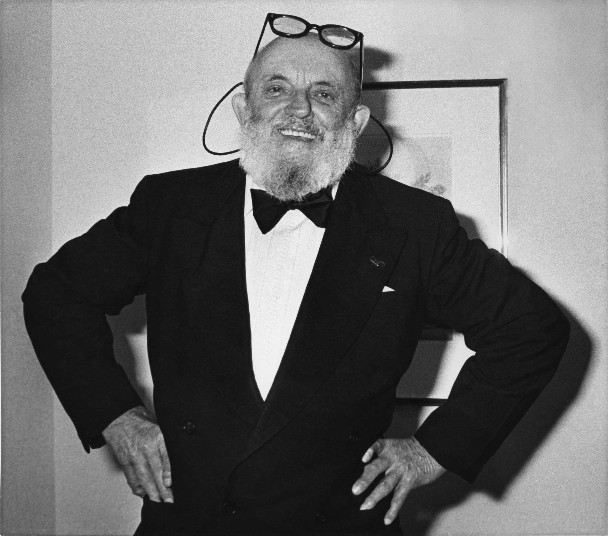

Ansel Adams

One of the most impactful nature photographers in the West.
Early Life: Ansel Easton Adams was born on February 20, 1902 in
San Francisco. He was the only son of Charles Hitchcock Adams and
Olive Bray Adams. Initially Charles was involved with running of the
lumber trading business established by his father. Later he set up an
insurance agency and a chemical factory.
1906-1907: While they were living in San Francisco, a
devastating earthquake shook the city. Four-year-old Ansel was thrust
against a wall in an aftershock and broke his nose. It could not be
repaired and he lived with a crooked nose all his life. The family
moved to a new residence, from where one could see the Golden Gate and
the Marin Headlands. Little Ansel, who was sickly and hyperactive,
did not have many friends, but the landscape around his home kept him
occupied.
1919: He joined the Sierra Club, an organization devoted for
protecting the wilderness of the Sierra Nevada. Thereafter from 1920
to 1924, hstyle="text-align:center"e worked as the summer caretaker of its visitor center in
Yosemite Valley. He also took part in the club’s high altitude treks.
1922: He had his first photograph published in the club’s
bulletin. While it showed careful composition, music still remained
his main focus. Therefore, while he spent the summer months hiking
and photographing in the Sierra Nevada, the rest of the year was
spent in improving his piano techniques. Over the time, he became
more involved with the conservation programs of the Sierra Club.
From the middle of the 1920s, he also started experimenting with
soft-focus, etching, bromoil process, and other techniques.
1931: Adams had his first solo exhibition at Smithsonian
Institution, which earned fantastic reviews from the ‘Washington
Post.’ In the following year, he had a group show with Imogen
Cunningham and Edward Henry Weston at the M. H. de Young Museum.
The success of the show prompted them to form Group f/64.
Learn more about Ansel Adams